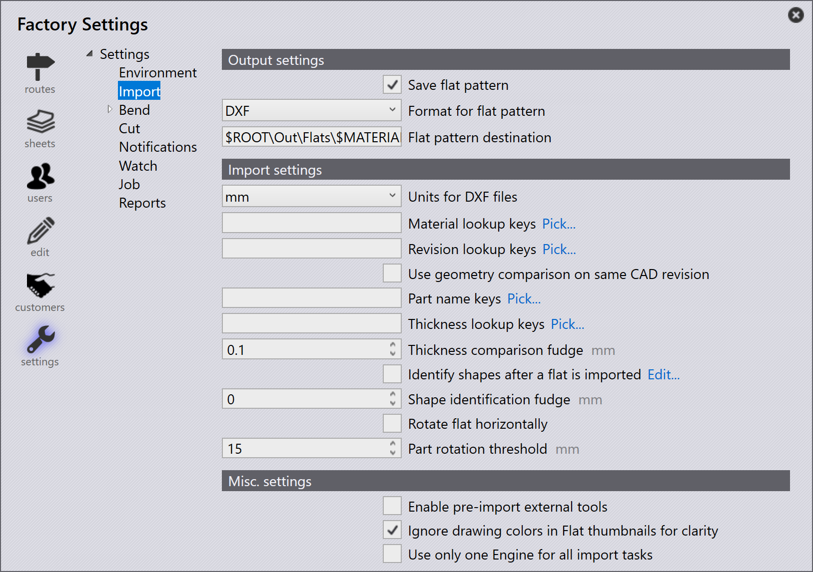

Import

Impostazioni output
Salva il modello piatto - Abilitare questa opzione per salvare lo sviluppo piano di una parte importata.
Formato per il modello piatto - Questa opzione viene utilizzata per scegliere tra i formati di file DXF o GEO.
Destinazione del modello piatto - Questa è la posizione in cui verrà salvato lo sviluppo piano.
Impostazioni di importazione
Unità per file DXF - Questa è l’unità di misura con cui verrà importato un file DXF, l’utente può scegliere tra mm o pollici.
Chiavi di ricerca dei materiali - È possibile assegnare più voci di ricerca utilizzando un separatore virgola tra di esse. Quando una parte viene importata, TruSmartCAM utilizza queste chiavi per cercare i valori dei materiali. I valori cercati vengono quindi utilizzati per risolvere il materiale grezzo. I valori originali sono memorizzati nelle proprietà Misc della parte.
Chiavi di ricerca revisione - Quando una parte viene importata, il valore di revisione dal file della parte grezza (il file della parte in fase di importazione) viene confrontato con il valore di revisione esistente nel repository. L’importazione viene abbandonata se la revisione è la stessa. La mappatura dei campi personalizzati è ora supportata anche per i file DXF. Per i file DXF, i dati dei campi personalizzati vengono estratti dal layer di testo nel disegno o da un allegato PPI.
Usa il confronto geometrie sulla stessa revisione CAD - Confronta la geometria durante l’importazione di una parte con la stessa revisione CAD e chiede all’utente di sostituire o saltare l’importazione se vengono rilevate differenze, Vedere Import configuration per maggiori dettagli.
Chaivi nome pezzo - Questa opzione funziona in modo simile al materiale e Chiavi di ricerca revisione. Impostare una o più Chaivi nome pezzo per utilizzare il PPI Nome pezzo invece del nome del file come nome della parte.
Chiavi di ricerca dello spessore - È possibile assegnare più voci di ricerca utilizzando un separatore virgola tra di esse. Quando una parte viene importata, TruSmartCAM utilizza queste chiavi per cercare i valori di spessore. I valori cercati vengono quindi utilizzati per risolvere lo spessore. I valori originali sono memorizzati nelle proprietà Misc della parte.
Ultimo rilievo confronto di spessori - Questo viene utilizzato nella ricerca del materiale grezzo quando viene importata una parte. TruSmartCAM tenta di risolvere il materiale grezzo dopo che il nome del materiale e lo spessore sono stati analizzati. Per ulteriori informazioni, fare riferimento all’argomento Thickness fudge di seguito.
Identificare le forme dopo l’importazione di un piano - Quando una parte viene importata, le forme interne all’interno della parte possono essere automaticamente riconosciute e identificate.
Ultimo rilievo identificazione forma - Il valore fudge di identificazione della forma può essere impostato a:
-
Livello globale - Questo valore viene utilizzato come predefinito per tutte le forme.
-
Livello di forma individuale - Il valore predefinito può essere sovrascritto impostando il valore fudge a livello di forma individuale. Selezionando la forma nella finestra di dialogo Shape Library viene visualizzato il valore fudge. Per impostazione predefinita, questo è impostato su 0 e il valore globale predefinito viene utilizzato per tali forme.
Ruotare orizzontalmente in piano - Generalmente i tavoli delle macchine da taglio sono rettangolari e più larghi. Per migliorare la fattibilità dell’attrezzatura, ruotare la parte lungo la larghezza della parte dopo che la parte è stata importata.
Non ruotare il mezzo meno di questo - Impostare questo come il numero minimo per consentire la rotazione. Qualsiasi parte più piccola del valore impostato non verrà ruotata.
Impostazioni varie
Abilita la pre-importazione di utensili di altro produttore - Abilitare l’opzione di importazione degli strumenti esterni pre-importazione per abilitare Creo Reader. TruSmartCAM carica le istanze di famiglia pre-estratte della parte rilasciata. Si prega di notare che l’estrazione dell’istanza viene eseguita durante il caricamento della parte (come operazione pre-importazione), quindi il software Creo deve essere installato sul computer da cui la parte viene caricata.
Ignora i colori simbolo nelle miniature piatte per maggiore chiarezza - Abilitare questa opzione per generare le miniature più nitide in scala di grigi. I colori del layer e le entità di testo vengono ignorati per garantire la chiarezza dell’immagine.
Utilizzare un solo motore per tutte le attività di importazione - Quando abilitato, viene utilizzato un solo core del motore per le attività importanti.
Thickness fudge
Il Ultimo rilievo confronto di spessori sceglie il valore di spessore della lastra più vicino quando uno spessore di lastra desiderato non è disponibile nell’inventario confrontando il valore di spessore delle lastre nell’inventario.
Ad esempio, supponiamo quanto segue:
-
Abbiamo una parte con spessore della lastra di 1,6 mm e materiale in acciaio.

-
Il valore Ultimo rilievo confronto di spessori è 0,1 mm.

-
L’inventario ha lastre d’acciaio con spessore 1,5 mm, 1,55 mm e 1,7 mm.

TruSmartCAM sceglie una lastra con il valore di spessore più vicino dopo aver confrontato il valore Ultimo rilievo confronto di spessori (0,1 mm) con l’elemento importato (che misura 1,6 mm). In questo caso, 1,55 mm sarà la selezione.